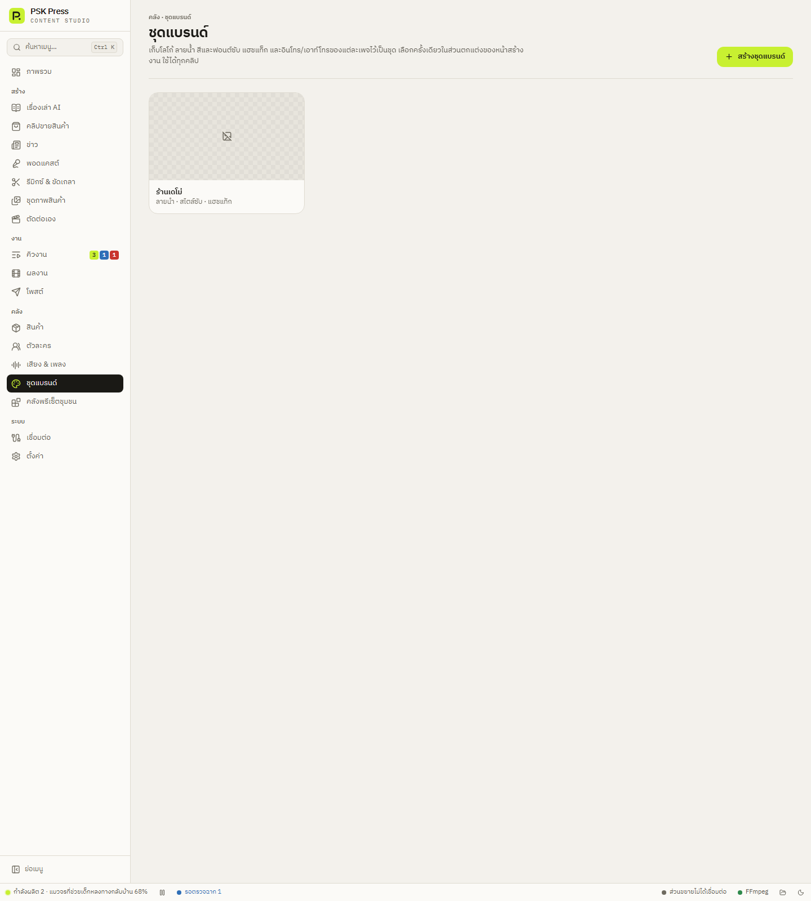

คลัง
ชุดแบรนด์
เก็บโลโก้ ลายน้ำ สีและฟอนต์ซับ แฮชแท็ก และอินโทร/เอาท์โทรของแต่ละเพจไว้เป็นชุด เลือกครั้งเดียวใช้ได้ทุกคลิป
ถ้าทำคลิปให้หลายเพจ แต่ละเพจมีโลโก้และสีของตัวเอง ให้สร้าง ชุดแบรนด์ ไว้เพจละชุด แล้วเลือกชุดในหน้าสร้างงาน คลิปทุกคลิปจะได้หน้าตาเดียวกันโดยไม่ต้องตั้งซ้ำ


สร้างชุดแบรนด์
- ไปที่ คลัง → ชุดแบรนด์ แล้วกด สร้างชุดแบรนด์
- ตั้ง ชื่อชุดแบรนด์ เช่น “เพจรีวิวของใช้”
- โลโก้: เลือกไฟล์รูป (PNG พื้นหลังโปร่งใสดูดีที่สุด) แล้วเลือก ตำแหน่ง (บนซ้าย / บนขวา / ล่างซ้าย / ล่างขวา) ขนาด (เปอร์เซ็นต์ของความกว้างคลิป) และ ความทึบ
- ใส่ ลายน้ำ (ข้อความมุมภาพ) และ แฮชแท็ก ถ้าต้องการ
- สไตล์ซับไตเติล: ฟอนต์ สีตัวอักษร สีขอบ/กล่อง และสีคำที่พูด — ช่องที่ไม่ได้เลือกจะไม่เปลี่ยนของเดิม
- อินโทร และ เอาท์โทร: ไฟล์วิดีโอสั้น ๆ ที่เล่นก่อนและหลังคลิป แอปปรับขนาดให้พอดีกับคลิปเอง
- กด บันทึก
ไฟล์ของชุดแบรนด์แอปเก็บสำเนาโลโก้และอินโทร/เอาท์โทรไว้เอง ย้ายหรือลบไฟล์ต้นฉบับได้โดยชุดแบรนด์ยังใช้ได้
ใช้ชุดแบรนด์กับงาน
ในหน้าสร้างงานทุกหน้า ส่วน การตกแต่งและส่งออก บรรทัดบนสุดคือ ชุดแบรนด์ เลือกชื่อชุด แล้วแอปจะใส่ลายน้ำ แฮชแท็ก และสไตล์ซับของแบรนด์ให้ (เฉพาะค่าที่แบรนด์ตั้งไว้) ส่วนโลโก้และอินโทร/เอาท์โทรจะใส่ตอนเรนเดอร์
- เลือก ไม่ใช้แบรนด์ เพื่อเลิกใช้ ค่าที่ใส่ไปแล้วยังอยู่ แก้ต่อได้ตามปกติ
- งานที่เข้าคิวแล้วจะใช้หน้าตาแบรนด์ตามตอนที่เข้าคิว แก้ชุดแบรนด์ทีหลังจะไม่กระทบงานเหล่านั้น
- ลบชุดแบรนด์ได้ที่หน้าแก้ชุด (ปุ่ม ลบ) งานที่ยังอยู่ในคิวจะเรนเดอร์ต่อได้ แต่ถ้าไฟล์โลโก้ถูกลบไปแล้วจะข้ามโลโก้